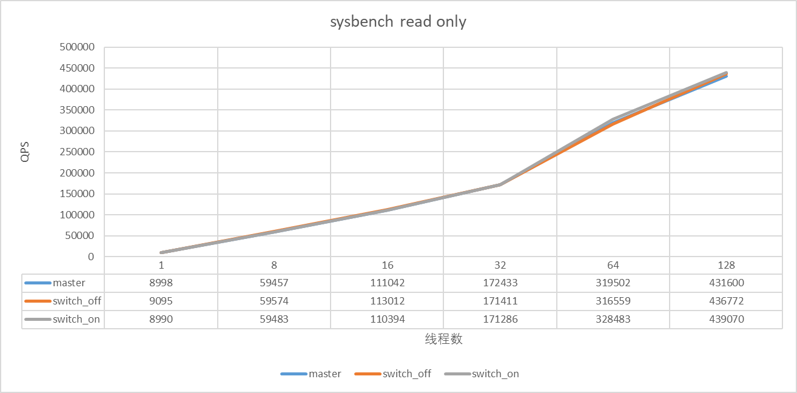
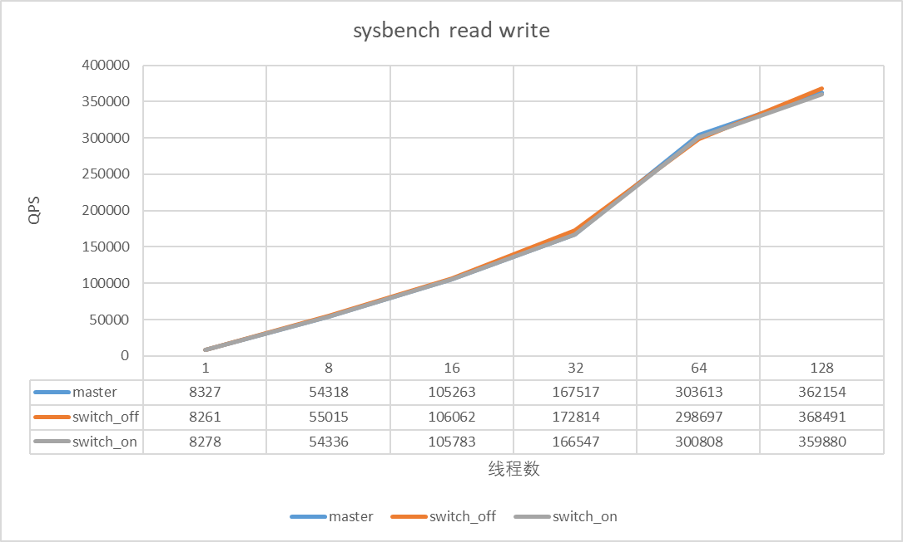

闪回查询
业界情况调研
TDSQL
在undo purge的时候将记录存放到另一张历史表。
其它
利用触发器，记录插入和删除操作（类似于binlog flashback，insert对应delete，delete对应insert，update将新旧值替换）。
方案设计
语法设计
select * from t1 as of timestamp 'xxxx-xx-xx xx:xx:xx';
select * from t1 as of timestamp 'xxxx-xx-xx xx:xx:xx' where id in (select id from t2 as of timestamp 'xxxx-xx-xx xx:xx:xx');
为PT_table_factor_table_ident添加用于记录闪回查询时间的Item成员（实际类型为Item_string），在调用SELECT_LEX::add_table_to_list的时候将字符串时间转换为unix时间戳，在SELECT_LEX::setup_tables中调用引擎层接口获取对应时间点的readview并保存在thd对象中。
读取历史数据
概要设计
全局维护历史read view与创建read view的时间，在判断一行记录是否可见的时候使用对应时间点的readview。
保存read view信息
为了减少资源消耗，由一个后台线程每隔一段时间，产生一个该时刻的read view，时间间隔可通过一个变量进行配置（innodb_backquery_trackpoint_create_interval）。产生的read view存放在全局的一个数据结构里面，称为history_views，按照时间顺序排序，innodb_backquery_window用来限制history_views的大小，如果最老的view的时间距离现在的时间超过了window设定的范围，需要清除最老的view。innodb_backquery_history_limit用来限制undo的history长度，当history长度超过了这个值后会忽略window的限制，触发清理最老的read view。
后台线程工作流程：
在同一个线程里需要执行两个任务：
- 调用 ReadView::snapshot创建历史readview，记录时间戳，周期由innodb_backquery_trackpoint_create_interval控制。
- 过期readview清理，周期由innodb_backquery_trackpoint_clean_interval控制。 这里可以设置为两个时间周期是因为如果历史readview的周期很长，可能导致过期readview不能被及时清理。如何在同一个线程实现两种不同周期的任务？
- 基准sleep 1s
- 到了每个任务的执行周期再执行对应的任务
历史readview清理规则：
- innodb_backquery_window用来限制history_views的大小，如果最老的view的时间距离现在的时间超过了window设定的范围，需要清除最老的view。
- innodb_backquery_history_limit用来限制undo的history长度，当history长度超过了这个值后会忽略window的限制，触发清理最老的readview。
- 如果一个历史readview正在被使用则不能清理。
如何判断一个readview是否被使用？
- 对保存的readview添加一个引用计数，如果引用计数大于1则表示正在使用。当查询完成后需要递减引用计数。
- 全局维护一个计数，记录readview被使用的总次数，用于debug或者快速判断是否还有readview在使用。
是否有必要清空ReadView::m_ids（保存了创建readview时活跃事务的id）？
- 如果实例比较繁忙，每一时刻活跃的事务较多，可能这些id占用的内存较多（等待具体测试）
查询历史数据
一个语句如果指定了闪回查询，那么在判断行记录可见性的时候，需要使用指定时间点的readview。修改trx_get_read_view函数，根据当前语句是否是闪回查询来控制使用的readview:
- 非闪回查询，返回原有的readview
- 闪回查询，根据table id去thd对象中寻找对应的readview
修改代码中所有需要判断行记录可见性的地方（仅针对记录可见性），由直接使用trx->readview修改为调用trx_get_read_view函数。当闪回查询语句结束的时候需要释放readview，对它的引用计数减1，以便及时清理readview，这个过程在语句执行结束的时候进行，新增一个函数ha_end_backquery，在mysql_execute_command函数的末尾调用。释放readview的过程：
- 遍历thd所有的用于闪回查询的readview，减少引用计数
- 清空thd与闪回查询有关的信息
create select，insert select支持
原本create select等语句是非一致性读，不会分配readview，考虑到可能有create table ... select ... from tb as of timestamp这种需要，因此需要修改相关逻辑，让create select等语句在指定闪回时使用一致性读的方式。具体的修改是在
ha_innobase::store_lock函数中增加一个判断条件，如果是闪回查询，则使用一致性读。
另外，这些语句都会记录binlog，如果是statement格式的日志，在slave上可能没有开启闪回查询开关，也可能slave不支持闪回查询，这时候slave会因此而中断。为了防止这样的清空，需要添加一个unsafe因素，在判断binlog格式的时候尽可能将闪回查询的日志写出为row格式。具体修改在THD::decide_logging_format中完成。
延迟undo清理
概要设计
修改purge线程逻辑，控制历史数据回收。
二级索引purge
二级索引上的记录是没有trx_id，不能直接判断可见性，可能需要回查主索引并遍历历史版本，某些情况下会有O(N^2)的时间复杂度（相关bug），为了减少大量回查带来的性能影响，供闪回查询的数据不提供二级索引，PolarDB这里设计为两次purge（不妨称为两阶段purge）：
- 第一次，从当前活跃的readview中获取最老的readview，只删除二级索引上被delete mark的记录
- 第二次，从闪回查询的history_views中获取最老的read view，删除过期的聚集索引记录
注意：由于二级索引被purge，因此在闪回查询的过程中只能使用聚集索引。
undo purge流程修改
原有的purge coordinator线程调用栈：
srv_do_purge
trx_purge
clone_oldest_view // 获取最老的ReadView
trx_purge_attach_undo_recs // 获取可以purge的undo记录
que_fork_scheduler_round_robin // 分发purge任务给worker(如果有worker)
trx_purge_wait_for_workers_to_complete
trx_purge_truncate // 从rollback segment中释放不必要的历史数据
trx_purge_truncate_history
我们的目标是第一次purge只清理二级索引的delete mark的记录，这里有两种实现方案：
- 新增一个purge queue：pre_purge_queue，如果开启了闪回查询，事务提交的时候先将对应的undo添加到新增的pre_purge_queue,purge完二级索引上的delete mark记录后再将对应的TrxUndoRsegs添加到原来的purge_queue，第二次purge从原有的purge_queue中取出事务号最小的TrxUndoRsegs进行purge，注意，此时使用的readview是从闪回查询的history_views中获取的最老的readview。
- 新增一个purge queue：pre_purge_queue，不论是否开启了闪回查询，在向purge_queue添加内容的时候都需要同等添加到pre_purge_queue中；在purge的过程中，不论是否开启闪回查询都需要遍历pre_purge_queue中的undo日志；开启闪回查询后，第一次purge使用当前最老readview，只删除二级索引记录，第二次purge和原有purge流程保持一致（为了实现动态开关，也会尝试删除二级索引记录，这个过程会根据聚集索引判断二级索引是否可以删除，理论上不存在安全问题）。
第一个方案有一个致命缺陷就是，会将一个回滚段所有的undo信息都push到purge_queue中，极端情况下可能导致OOM。这里采用第二种方案，两个purge queue并行且互不相干。
一阶段purge细节
trx_purge_t的成员记录了purge相关的信息，关键成员：
ReadView view; // 控制purge的readview，每次purge开始前调用clone_oldest_view进行赋值
purge_iter_t iter; // 当前进行purge的TrxUndoRsegs的迭代器
trx_rseg_t *rseg; // 下一个需要被purge的undo log的回滚段
page_no_t page_no; // 下一个需要被purge的undo log的log header所在页面
ulint offset; // 下一个需要被purge的undo log的页面偏移
page_no_t hdr_page_no; // 下一个需要被purge的undo log的undo header所在页面
ulint hdr_offset; // 下一个需要被purge的undo log的undo header页面偏移
/* ... */
rollback segment的内存结构trx_rseg_t也有一些数据记录当前purge的进度
// 历史链表中最老未被purge的undo log header所在页面
page_no_t last_page_no;
// 历史链表中最老未被purge的undo log header所在页面偏移
size_t last_offset;
// 历史链表中最老未被purge的undo log的事务号
trx_id_t last_trx_no;
// 历史链表中最老未被purge的undo log是否需要purge（有delete undo）
bool last_del_marks;
purge流程：
purge的时候从队列中取出一个TrxUndoRsegs对象（保存了事务使用的所有rollback segment），遍历其中的rollback segment（每一个rollback segment都有成员last_page_no和last_offset来表示该回滚段中最老未被purge的undo日志header所在的页面与偏移），根据last_page_no和last_offset来定位需要purge的undo日志，再遍历undo日志中的每一个undo记录进行purge。
为了支持两阶段purge，需要在trx_purge_t和trx_rseg_t中为back query增加相应的内容来记录第一次purge的进度，这里的处理方式和原生的purge流程相似（代码和原生purge几乎一样），如果关闭了闪回查询，这个过程是只遍历undo记录，不做任何操作。
一阶段purge worker流程
purge worker的第一次purge流程（如果有worker数量大于1，否则coordinator线程自己负责purge）需要做一些改变：
第一次purge流程：
- 获取一批undo日志
- 尝试删除二级索引记录，不删除主索引记录（开关打开）
- 不删除被更新的external存储的内容
第二次purge流程和原生purge流程一样：
- 获取一批undo日志
- 尝试删除二级索引记录
- 删除主索引记录
- 删除被更新的external存储的内容
undo truncate流程
purge是删除delete mark的记录，事务产生的undo内容在truncate过程中清理。函数trx_purge_truncate中:
if (purge_sys->limit.trx_no == 0) {
trx_purge_truncate_history(&purge_sys->iter, &purge_sys->view);
} else {
trx_purge_truncate_history(&purge_sys->limit, &purge_sys->view);
}
可以通过控制trx_purge_truncate_history使用的readview来控制是否truncate undo内容，这里直接使用backquery_history_view_list最老的的readview来延缓undo truncate。
使用说明
变量说明
| 名称 | 类型 | 有效值 | 默认值 | 说明 |
| innodb_backquery_enable | bool | ON\|OFF | OFF | 开关 |
| innodb_backquery_window | LONG | 1~2592000 | 86400 | 闪回支持的时间范围，单位：秒 |
| innodb_backquery_history_limit | ULONG | 1~INT_MAX64 | 8000000 | 闪回支持的undo日志历史链表长度，超过这个长度，会忽略innodb_backquery_window，进行purge，直到长度低于设定值 |
| innodb_backquery_trackpoint_create_interval | LONG | 1~86400 | 1 | 闪回查询的时间粒度（创建readview快照的时间间隔），单位：秒 |
| innodb_backquery_trackpoint_clean_interval | LONG | 1~86400 | 1 | 闪回清理readview快照的时间间隔，单位：秒 |
状态变量
| 名称 | 说明 |
| Innodb_backquery_history_views | 存储在内存中的历史readview个数 |
| Innodb_backquery_up_time | 最老的readview的创建时间（带时区） |
| Innodb_backquery_low_time | 最新的readview的创建时间（带时区） |
使用示例
MySQL [(none)]> set global innodb_backquery_enable=ON;
Query OK, 0 rows affected (0.00 sec)
MySQL [test]> create table t1(id int,c1 int) engine=innodb;
Query OK, 0 rows affected (0.06 sec)
MySQL [test]> insert into t1 values(1,1),(2,2),(3,3),(4,4);
Query OK, 4 rows affected (0.01 sec)
Records: 4 Duplicates: 0 Warnings: 0
MySQL [test]> select now();
+---------------------+
| now() |
+---------------------+
| 2022-02-17 16:01:01 |
+---------------------+
1 row in set (0.00 sec)
MySQL [test]> delete from t1 where id=4;
Query OK, 1 row affected (0.00 sec)
MySQL [test]> select * from t1;
+------+------+
| id | c1 |
+------+------+
| 1 | 1 |
| 2 | 2 |
| 3 | 3 |
+------+------+
3 rows in set (0.00 sec)
MySQL [test]> select * from t1 as of timestamp '2022-02-17 16:01:01';
+------+------+
| id | c1 |
+------+------+
| 1 | 1 |
| 2 | 2 |
| 3 | 3 |
| 4 | 4 |
+------+------+
4 rows in set (0.00 sec)
其它说明
create select
create table t2 select * from t1 as of timestamp 'xxx';
insert select
insert into t3 select * from t1 as of timestamp 'xxx';
注意：暂不支持prepared statement和stored procedure
测试
功能测试
数据准备
create table t1(id int primary key, c1 varchar(20));
insert into t1 values(1,'aaa'),(2,'bbb'),(3,'ccc'),(4,'ddd'),(5,'eee');
create table t2(id int primary key, c1 varchar(20));
insert into t2 values(1,'adaa'),(2,'bdbb'),(3,'cdcc'),(4,'ddcd'),(5,'eefe');
select now();
2022-02-28 15:01:31
测试1
update t1 set c1='abcdefg' where id=5;
select * from t1 as of timestamp '2022-02-28 15:01:31';
1 aaa
2 bbb
3 ccc
4 ddd
5 eee
符合预期
测试2
select t1.c1,t2.id from t1,t2 where t1.id=t2.id;
aaa 1
bbb 2
ccc 3
ddd 4
abcedfg 5
符合预期
测试3
select t1.c1,t2.id from t1 as of timestamp '2022-02-28 15:01:31',t2 where t1.id=t2.id;
aaa 1
bbb 2
ccc 3
ddd 4
eee 5
符合预期
测试4
select now();
2022-02-28 15:03:33
select t1.c1,t2.id from t1 as of timestamp '2022-02-28 15:01:31',t2 as of timestamp '2022-02-28 15:03:33' where t1.id=t2.id;
aaa 1
bbb 2
ccc 3
ddd 4
eee 5
测试5
select * from t2;
1 adaa
2 bdbb
3 cdcc
4 ddcd
5 eefe
select now();
2022-02-28 15:05:14
update t2 set c1= 'newabcd' where id=1;
select now();
2022-02-28 15:05:42
select t1.c1,t2.id,t2.c1 from t1 as of timestamp '2022-02-28 15:01:31',t2 as of timestamp '2022-02-28 15:05:42' where t1.id=t2.id;
aaa 1 newabcd
bbb 2 bdbb
ccc 3 cdcc
ddd 4 ddcd
eee 5 eefe
select t1.c1,t2.id,t2.c1 from t1 as of timestamp '2022-02-28 15:05:42',t2 as of timestamp '2022-02-28 15:05:42' where t1.id=t2.id;
aaa 1 newabcd
bbb 2 bdbb
ccc 3 cdcc
ddd 4 ddcd
abcdefg 5 eefe
内存占用测试
sysbench read_write 1024并发，测试内存占用。历史链表长度很快就到达了innodb_backquery_history_limit的限制，实际上整个测试过程中保存的views的数量只有几百个，内存占用可以忽略不计。
性能测试
机器配置：96核心，700G+内存。测试：bp 100G，100张表，单表100000数据，测试时间10分钟。backquery开关打开后的配置：innodb_backquery_window=3600，其它默认值。
测试结果：
sysbench read-only

sysbench read-write

从结果来看没有明显性能下降，基本保持一致。
稳定性测试
sysbench read-write；1024并发；时间：1小时；sysbench运行过程中使用脚本文件随机打开和关闭 innodb_backquery_enable 开关，实例稳定运行，未crash。
开关关闭时Undo扫描优化
现有实现方式，在开关关闭后仍然会扫描undo来维持第一次purge的进度的正确性，会带来一些开销。
优化方式
开关关闭后不扫描undo，在开关打开时，遍历所有回滚段（这期间需要阻止purge线程运行），将所有回滚段的第一次purge的进度设置为和第二次purge进度一致（可能会有进度回退）。打开开关的过程中可能存在这样的一些情形：
场景1
| |
| |
| set backquery on
trx 1 rseg->latch() |
push queue |
trx 1 rseg->unlatch() |
| |
| rseg->latch()
| rseg->pre_last_page_no=FIL_NULL
| rseg->unlatch()
| |
上面的情况下，trx1 push到queue中的内容是不需要的。
场景2
| |
| |
set backquery on |
rseg->latch() |
rseg->pre_last_page_no=FIL_NULL |
rseg->unlatch() |
| |
| trx 2 rseg->latch()
| push queue
| trx 2 rseg->unlatch()
| |
上面的情况下，trx 2 push到queue中的内容是需要的。
由于上面这两种情况的存在，所以pre_queue中的内容是否全部需要是不能判断的，因此我们直接将purge_queue中的内容拷贝到pre_purge_queue中，同时需要拷贝其它表示purge进度的变量。